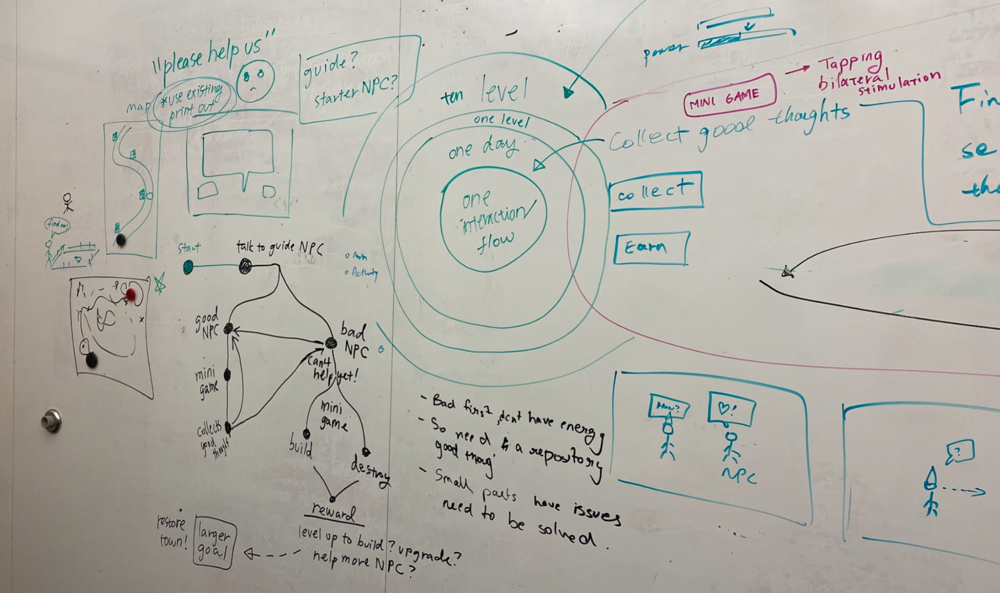

VR GAME FOR SELF-COMPASSION
How might we empower young adults to manage stress and overcome feelings of inadequacy?
Overview
Young adults often grapple with stress, anxiety, and self-critical thinking. These challenges hinder confidence, exacerbate anxiety and depression, and impede personal growth. In this project, we aim to help young adults overcome these challenges by creating an immersive VR experience that fosters self-compassion and emotional resilience, ultimately promoting mental well-being.
Research & Ideation
The Problem
Young adults need help managing academic and work-related stress, which causes them to feel anxious and inadequate.
Focus Groups: to understand how people feel about processing their emotions and their general mental wellbeing, we provided a slide deck of 50 metaphors; participants chose metaphors they resonated with in advance, then they shared their thoughts with the group.
Research Findings
Using the entire body to move and process information is more effective than sitting in front of a screen.
Immersive environments are recognized for their potential in psychotherapy. These environments provide a safe and controlled space for individuals to confront emotional challenges. Research also highlights how VR can create experiences that promote emotional processing and self-awareness, essential components of effective therapy.
Games create the ideal environment for learning.
Games allow for the formation of a magic circle: a safe, playful space that encourages exploration. Within the magic circle, players can safely make mistakes and act in ways that are not in accordance with their everyday persona, thereby allowing the game to become an ideal environment for learning.
Nudging the player to be open and honest about their feelings.
We conducted focus groups to understand challenges that young adults face with managing mental wellbeing. We decided to employ cognitive distancing to encourage players to be more open and honest about their feelings.
Ideation
The team explored game ideas that used bodily movements to combat negative emotions, inspired by therapeutic techniques including ACT (acceptance & commitment therapy) and EMDR (eye movement desensitization and reprocessing).
The core of our design is to allow users to confront their thoughts in a safe environment and be able to let their thoughts go, and we hypothesize that physical movements can help achieve this transformational goal.

Using eye movement to catch fireflies
Punching negative thoughts in the form of monsters that disintegrate
A variation of the punching idea with more varied movements
Rapid Arts and Crafting Prototyping
We wanted the game to be lighthearted and fun, so players don’t feel burdened by confronting their negative emotions. We want players to leave the game feeling refreshed and confident.
Thus, we created a narrative to distance players from real life, and we reframed the narrative from helping yourself to learning how to help yourself from helping others.
The game takes place in a beautiful but troubled village, and players follow a storyline where they help the villagers to destroy negative thoughts. Through helping villagers, they engage with tasks to help ground them and relieve stress through bodily movements.

Figuring out the core narrative and points of interaction